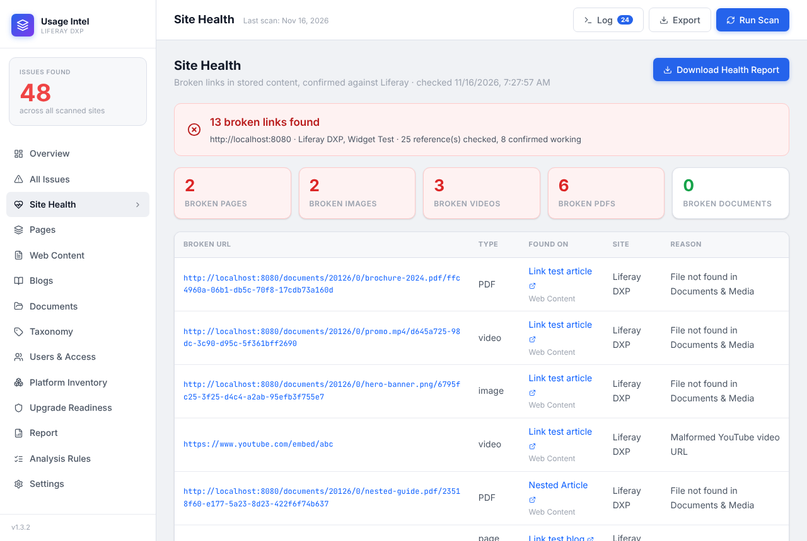
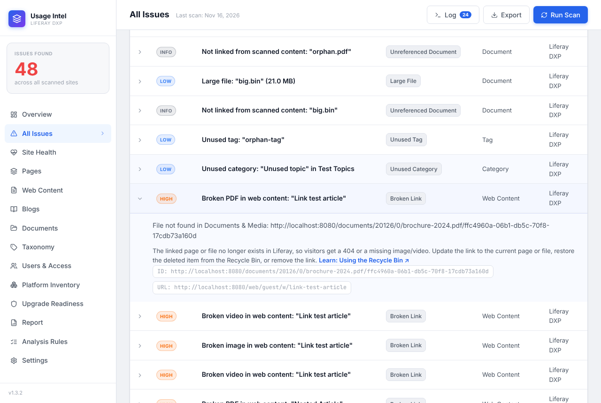

Scan your Liferay sites for broken links, unused and stale content, dormant accounts, and what will break when you upgrade. It runs inside Liferay with the signed-in administrator's permissions and read-only access, and every finding says how to fix it, with a link to Liferay's documentation. A community app for experimental use.
Report an issue or suggest a feature →Features
- Nothing to configure. Deploy one zip, and an administrator-only page with the dashboard is created for you.
- Read-only, enforced by Liferay. Its OAuth 2 application has read scopes only, so Liferay rejects any write, whatever the user's own permissions. No password is entered or stored.
- Site Health. Broken page links, images, videos and PDFs in pages, web content, blogs, knowledge base, message boards, wiki and navigation menus, each confirmed with Liferay, with a downloadable report.
- Upgrade Readiness. Liferay's breaking changes between your release and your target, checked against your own data, plus deprecated features that are in use.
- Content and access hygiene. Unused, stale and duplicate content, empty folders, unused tags and categories, large files, dormant and never-used accounts, and stuck approvals.
- Zip or Docker. Drop the zip into deploy, or add it to your Liferay image from its container image.
Screenshots



